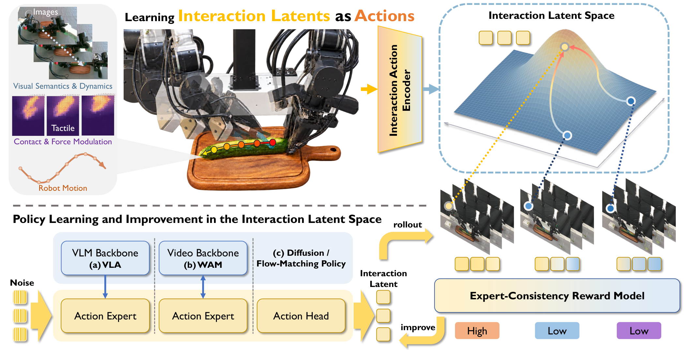
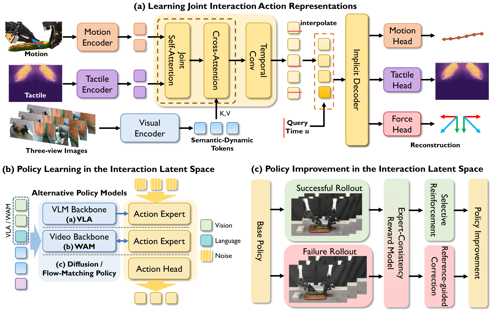

Interaction Latents as Actionsfor Contact-Rich Manipulation
Overview

We propose ILA (Interaction Latents as Actions), which uses decodable interaction latents that jointly capture the evolution of motion and force application as policy action units, providing a shared representation for action generation, evaluation, and offline improvement.
Method

Interaction representation
A visually conditioned encoder maps aligned action and tactile sequences into shared interaction latents. A time-conditioned decoder reconstructs actions, tactile deformation fields, and aggregate deformation as a force proxy.
Latent-space policy learning
Interaction latents serve as flow-matching targets for post-training FM, VLA, and WAM policies. The frozen shared decoder converts predicted latents into executable actions.
Offline policy improvement
Dense interaction rewards guide offline policy improvement through reward-weighted learning from successful rollouts and expert-guided correction of failed rollouts.
Results
Interaction latent actions
Success rate (%) Higher is better ↑
Execution force-proxy error (Fext L1) Lower is better ↓
Compared methods. FM-tac, VLA-tac, and FastWAM-tac directly predict actions with tactile conditioning; FM-tac*, VLA-tac*, and DreamTac jointly predict actions and tactile signals. Methods within each family share expert data and evaluation conditions. Force error (Fext L1) measures the L1 difference between executed force-proxy signals and expert references.
Policy improvement
With dense interaction rewards and expert-guided correction, FM-ILA-RL improves mean success rate from 80% to 85.25% (+5.25 pp) and reduces mean execution force-proxy error from 3.39 to 1.82 (46.4% lower) compared with FM-ILA.